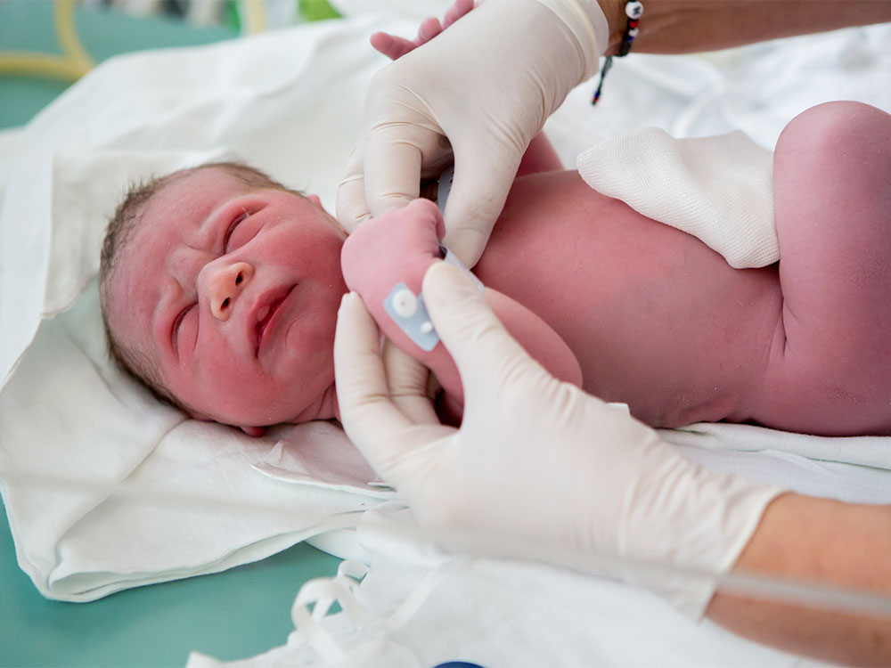

Multi-Omics Analysis of Pain/Stress Impact on Neurodevelopment in Preterm Infants
• Execute variant calling analysis with GATK on preterm infant exome capture data
• Perform genome wide association study (GWAS) using PLINK to identify SNPs associated with binary (i.e., gender, race) and quantitative (i.e., stress, size) traits
• Use mothur to process 16S rRNA gene sequences to assess whether cumulative stress/pain events in early life contribute to gut dysbiosis